print("Questo è un esempio di soluzione")[1] "Questo è un esempio di soluzione"
binwidth = a breaks = con un vettore di date creato con floor_date(), ceiling_date() e seq.Date()complete()geom_tile() a partire da dati aggregati, anche con le etichette dei valori{sf}, unirlo ai dati con left_join() e disegnare mappe coropletiche di tassi e proporzioni con geom_sf(){apyramid}Questo esercizio è progettato per essere una guida e per aiutarti a completarlo in autonomia. Ti consigliamo fortemente di provare a eseguire il codice prima di guardare le soluzioni. Per aiutarti, abbiamo incluso in alcuni punti dei suggerimenti che possono indirizzarti nella direzione giusta. Li troverai così:
Clicca per leggere un suggerimento
Questo è un suggerimento.
Le soluzioni, invece, avranno questo aspetto:
Clicca per vedere la soluzione (provaci da solo prima!)
print("Questo è un esempio di soluzione")[1] "Questo è un esempio di soluzione"Durante l’esercizio troverai anche domande a risposta multipla, che servono a verificare se stai seguendo correttamente lo svolgimento. Le domande saranno simili a questa:
Lungo il modulo troverai anche due tipi di riquadri colorati. I riquadri arancioni segnalano errori frequenti o punti in cui R si comporta in modo inatteso: leggili sempre, perché possono farti risparmiare tempo.
I riquadri verdi contengono invece approfondimenti facoltativi, per chi vuole andare un po’ oltre: puoi saltarli senza perdere il filo dell’esercizio e tornarci in un secondo momento.
Ti consigliamo di provare comunque a rispondere e a eseguire il codice da solo prima di consultare suggerimenti e soluzioni: è così che si impara davvero a usare R.
Oggi pomeriggio torni ai grafici: riprendi lo script plot.R, su cui hai lavorato ieri nei Moduli 5 e 6. Se hai chiuso il progetto, riaprilo. Poi apri plot.R dalla cartella script ed esegui tutto il codice sopra l’area di prova: metti il cursore sulla riga del titolo “Area di prova” e premi Ctrl + Alt + B (Cmd + Option + B su Mac).
Poi, sopra la sezione “Area di prova”, crea una nuova sezione chiamata “Modulo 08 - Altri grafici” con la combinazione di tasti Ctrl + Shift + R (Cmd + Shift + R su Mac): qui scriverai il codice dell’esercitazione del pomeriggio. L’area di prova deve restare sempre l’ultima sezione dello script. Ricordati di salvare spesso il lavoro (Ctrl + S, oppure Cmd + S su Mac).
Da qui comincia l’esercitazione.
{sf} e {apyramid}In questo modulo userai due pacchetti che non hai ancora caricato: {sf}, per leggere e disegnare le mappe, e {apyramid}, per le piramidi per età e sesso. Vai alla sezione “Caricamento pacchetti” all’inizio di plot.R e aggiungi questi due pacchetti all’interno di pacman::p_load(), prima di {tidyverse}, senza creare un nuovo comando. Poi esegui di nuovo pacman::p_load() per caricarli.
Clicca per vedere la soluzione (provaci da solo prima!)
# Caricamento pacchetti ---------------------------------------------------
pacman::p_load(
rio, # importazione ed esportazione dei dati
skimr, # panoramica dei dati
janitor, # pulizia dei dati e tabelle
lubridate, # lavorare con le date
epikit, # classi di età
gtsummary, # tabelle descrittive
flextable, # tabelle da presentare
sf, # dati spaziali e mappe
apyramid, # piramidi per età e sesso
tidyverse # gestione e visualizzazione dei dati
)Per le mappe, che vedrai più avanti, userai due file nuovi, che vanno importati all’inizio dello script:
dati/shapefiles/regioni.shp, con i confini di ciascuna regione. Uno shapefile non è un solo file: regioni.shp è accompagnato da altri file con lo stesso nome e un’estensione diversa (.shx, .dbf, .prj), che devono stare nella stessa cartella. Tu leggi solo il .shp, con la funzione read_sf() del pacchetto {sf}, e R trova gli altri;regioni del Modulo 7, dati/regioni.rds, con la popolazione di ciascuna regione, che si importa con import() come dati_clean.Vai alla sezione “Importazione dati” all’inizio di plot.R e, sotto l’importazione di dati_clean, importa lo shapefile in un oggetto regioni_sf e il dataframe in un oggetto regioni. Esegui le nuove righe.
Clicca per vedere la soluzione (provaci da solo prima!)
# Importazione dati -------------------------------------------------------
dati_clean <- import("dati/dati_clean.rds")
regioni_sf <- read_sf("dati/shapefiles/regioni.shp")
regioni <- import("dati/regioni.rds")Anche oggi userai l’“Area di prova” in fondo allo script plot.R, la stessa dei Moduli 5 e 6. Le sezioni che creerai più avanti vanno inserite sopra l’area di prova, così che resti sempre l’ultima sezione dello script.
Come nei moduli precedenti:
In ogni esercizio ti indicheremo dove scrivere il codice.
Crea ora una nuova sezione (Ctrl+Shift+R) chiamata “Epicurva” sopra l’area di prova.
Una curva epidemica (epicurva) è un istogramma delle date: ogni barra conta gli eventi avvenuti in un intervallo di tempo, qui le vaccinazioni. Il punto di partenza è l’istogramma che conosci dal Modulo 5.
Nell’area di prova, fai un istogramma di date_vacc con geom_histogram(), senza argomenti.
Clicca per vedere la soluzione (provaci da solo prima!)
ggplot(data = dati_clean, mapping = aes(x = date_vacc)) +
geom_histogram()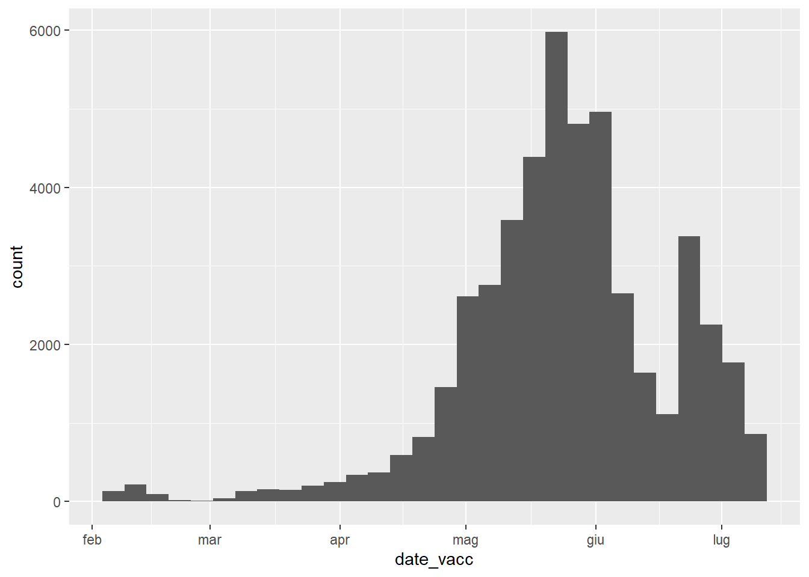
Nella Console compare un messaggio: geom_histogram() ha diviso il periodo in 30 intervalli (bins = 30) e suggerisce di scegliere un valore migliore. Il periodo delle vaccinazioni va dal 6 febbraio al 9 luglio 2021, cioè 153 giorni: ogni barra copre un intervallo di circa 5 giorni, una durata che non corrisponde a nessuna unità di tempo con cui lavoriamo.
binwidthPer avere barre di una settimana puoi indicare la larghezza degli intervalli con binwidth =, come nel Modulo 5: con le date l’unità è il giorno, quindi binwidth = 7.
Nell’area di prova, rifai l’istogramma con binwidth = 7.
Clicca per vedere la soluzione (provaci da solo prima!)
ggplot(data = dati_clean, mapping = aes(x = date_vacc)) +
geom_histogram(binwidth = 7)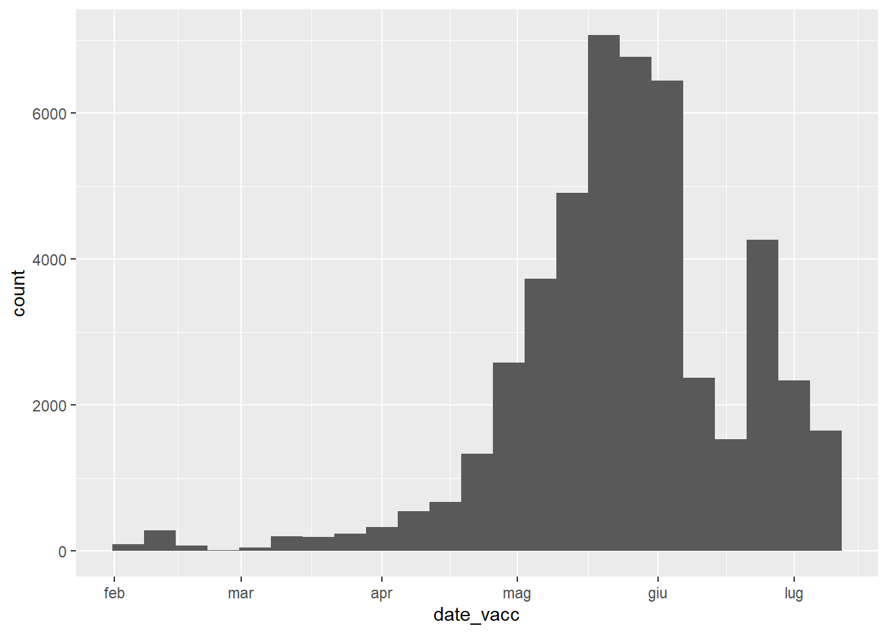
Ora ogni barra dura 7 giorni, ma resta un problema: non sai da che giorno a che giorno va ogni barra. È geom_histogram() a decidere dove inizia il primo intervallo, e non necessariamente di lunedì: una barra potrebbe andare, per esempio, da giovedì a mercoledì. In una curva epidemica le settimane devono invece essere settimane di calendario, da lunedì a domenica, come nei bollettini di sorveglianza.
Per decidere tu dove inizia e finisce ogni barra, geom_histogram() accetta l’argomento breaks =, a cui si passa un vettore con i confini degli intervalli. Ci serve quindi un vettore con tutti i lunedì, dal lunedì della settimana della prima vaccinazione al lunedì successivo all’ultima.
floor_date(), ceiling_date() e seq.Date()Per costruire questo vettore servono due passaggi.
Il primo è trovare i due estremi. Il pacchetto {lubridate} ha due funzioni che arrotondano una data all’inizio di un periodo:
floor_date() la porta indietro, all’inizio del periodo che la contiene;ceiling_date() la porta avanti, all’inizio del periodo successivo.Il periodo si indica con unit = ("week", "month", "year", …). Per le settimane serve anche week_start =, il giorno in cui inizia la settimana: 1 è il lunedì, 7 la domenica.
Nell’area di prova, applica floor_date() alla data della prima vaccinazione, min(dati_clean$date_vacc), e ceiling_date() alla data dell’ultima, max(dati_clean$date_vacc), con unit = "week" e week_start = 1.
Clicca per vedere la soluzione (provaci da solo prima!)
# IN AREA DI PROVA
min(dati_clean$date_vacc) # sabato 6 febbraio 2021[1] "2021-02-06"floor_date(min(dati_clean$date_vacc), unit = "week", week_start = 1)[1] "2021-02-01"max(dati_clean$date_vacc) # venerdì 9 luglio 2021[1] "2021-07-09"ceiling_date(max(dati_clean$date_vacc), unit = "week", week_start = 1)[1] "2021-07-12"Il secondo passaggio è riempire lo spazio tra i due estremi. seq.Date() crea una sequenza regolare di date, con gli argomenti from = (la prima data), to = (l’ultima) e by = (il passo: "week", "month", ma anche "4 weeks"). Partendo da un lunedì con by = "week", la sequenza contiene tutti i lunedì fino all’ultimo.
Il vettore servirà anche più avanti, quindi va nello script: nella sezione “Epicurva”, crea un vettore settimane con seq.Date(), usando come estremi le due date che hai appena calcolato. Nell’area di prova controllane l’inizio con head().
Clicca per vedere la soluzione (provaci da solo prima!)
# NELLO SCRIPT
# Epicurva ----------------------------------------------------------
# tutti i lunedì, dalla settimana della prima vaccinazione a quella dopo l'ultima
settimane <- seq.Date(
from = floor_date(min(dati_clean$date_vacc), unit = "week", week_start = 1),
to = ceiling_date(max(dati_clean$date_vacc), unit = "week", week_start = 1),
by = "week")
# IN AREA DI PROVA
head(settimane)[1] "2021-02-01" "2021-02-08" "2021-02-15" "2021-02-22" "2021-03-01"
[6] "2021-03-08"Ora hai i confini delle settimane. Nella sezione “Epicurva” rifai l’istogramma sostituendo binwidth = 7 con breaks = settimane e closed = "left": con closed = "left" ogni intervallo comprende il suo primo giorno, il lunedì, e non l’ultimo, il lunedì successivo, che appartiene già alla settimana dopo. Aggiungi le etichette degli assi e un’etichetta al mese in italiano (formato "%b\n%Y"), come nel Modulo 6.
Clicca per vedere la soluzione (provaci da solo prima!)
# settimane da lunedì a domenica
ggplot(data = dati_clean, mapping = aes(x = date_vacc)) +
geom_histogram(breaks = settimane, closed = "left") +
scale_x_date(
date_breaks = "1 month",
labels = scales::label_date("%b\n%Y", locale = "it")) +
labs(x = "Settimana di vaccinazione", y = "Vaccinati")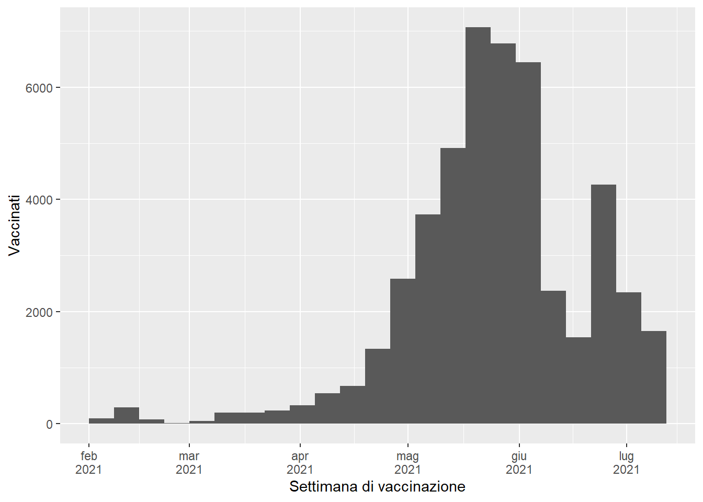
Nell’area di prova, costruisci ora una curva mensile delle vaccinazioni con il riempimento per hiv. Il procedimento è lo stesso della curva settimanale: crea un vettore mesi con il primo giorno di ogni mese e passalo a breaks =.
Clicca per leggere un suggerimento
Come per settimane, ma con unit = "month" (senza week_start) e by = "month".
Clicca per vedere la soluzione (provaci da solo prima!)
mesi <- seq.Date(
from = floor_date(min(dati_clean$date_vacc), unit = "month"),
to = ceiling_date(max(dati_clean$date_vacc), unit = "month"),
by = "month")
ggplot(data = dati_clean, mapping = aes(x = date_vacc, fill = hiv)) +
geom_histogram(breaks = mesi, closed = "left") +
scale_x_date(
date_breaks = "1 month",
labels = scales::label_date("%b\n%Y", locale = "it")) +
labs(x = "Mese di vaccinazione", y = "Vaccinati", fill = "Stato HIV")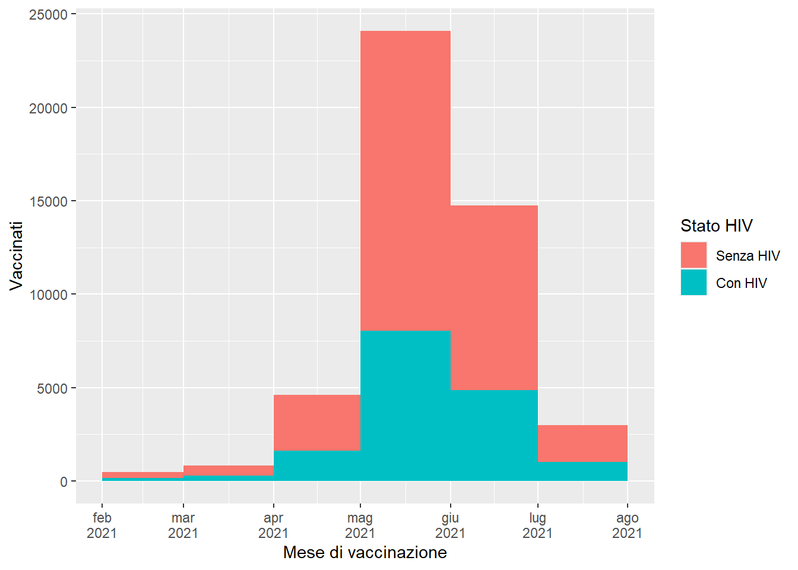
complete()Quando conti con count(), le combinazioni che non compaiono nei dati non hanno una riga: una settimana senza vaccinati, semplicemente, non c’è. In una tabella può andare bene, in un grafico no, perché quella settimana sparisce invece di comparire con zero. complete() del pacchetto {tidyr} aggiunge le righe mancanti. Fa per un dataframe in formato lungo quello che values_fill faceva per pivot_wider() nel Modulo 7:
DATI %>%
complete(VARIABILE_1, VARIABILE_2, fill = list(n = 0))complete() crea tutte le combinazioni dei valori presenti nei dati;variabile = VALORI, per indicare tu tutti i valori che deve avere;fill = dice con che cosa riempire le altre variabili nelle righe aggiunte: senza, sarebbero NA.Nello script, nella sezione “Epicurva”, crea un dataframe vacc_settimana con il numero di vaccinati per settimana (variabile settimana, il lunedì di ogni settimana). Con complete() aggiungi le settimane senza vaccinati, con n = 0, dalla prima all’ultima settimana. Poi, nell’area di prova, fai un grafico a barre con geom_col().
Clicca per leggere un suggerimento
Crea settimana con floor_date() dentro mutate(), poi count(settimana). In complete() indica tutte le settimane dalla prima all’ultima: settimana = seq.Date(from = min(settimana), to = max(settimana), by = "week").
Clicca per vedere la soluzione (provaci da solo prima!)
# NELLO SCRIPT
vacc_settimana <- dati_clean %>%
mutate(settimana = floor_date(date_vacc, unit = "week", week_start = 1)) %>%
count(settimana) %>%
complete(settimana = seq.Date(from = min(settimana), to = max(settimana), by = "week"),
fill = list(n = 0))
# IN AREA DI PROVA
ggplot(data = vacc_settimana, mapping = aes(x = settimana, y = n)) +
geom_col()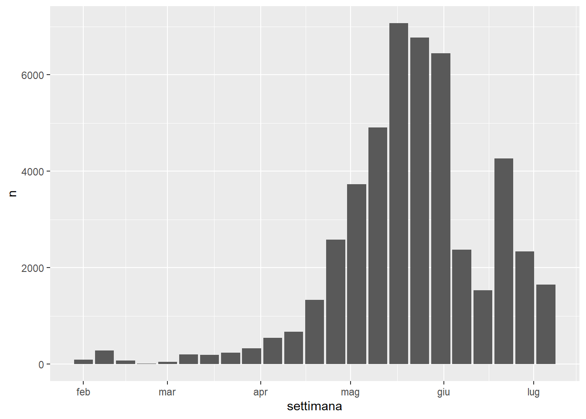
Aggiungi width = 5 dentro geom_col(). Poi metti sull’asse x un’etichetta ogni 4 settimane, nel formato “2021-W05”, e ruota le etichette di 90 gradi. Questa versione va nello script.
Clicca per leggere un suggerimento
In scale_x_date() usa breaks = seq.Date(from = min(settimane), to = max(settimane), by = "4 weeks") e labels = scales::label_date("%G-W%V"). %V è il numero di settimana ISO e %G l’anno a cui la settimana appartiene. Per ruotare le etichette: theme(axis.text.x = element_text(angle = 90, vjust = 0.5)).
Clicca per vedere la soluzione (provaci da solo prima!)
ggplot(data = vacc_settimana, mapping = aes(x = settimana, y = n)) +
geom_col(width = 5) +
scale_x_date(
breaks = seq.Date(from = min(settimane), to = max(settimane), by = "4 weeks"),
labels = scales::label_date("%G-W%V")) +
theme(axis.text.x = element_text(angle = 90, vjust = 0.5)) +
labs(x = "Settimana di vaccinazione", y = "Vaccinati")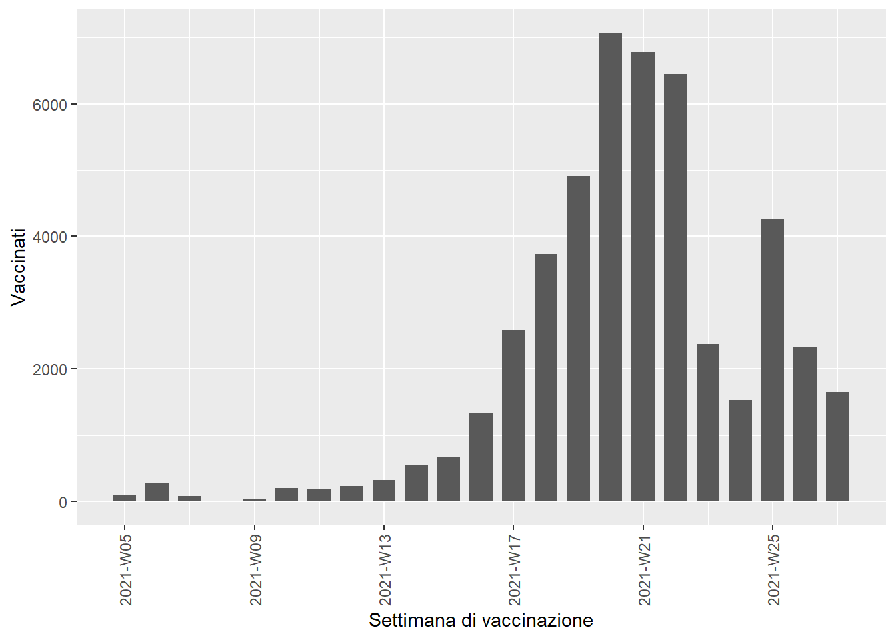
Una heatmap è una griglia di celle colorate: ogni cella è una combinazione di due variabili, e il colore ne rappresenta il valore. In {ggplot2} si costruisce con geom_tile(), che vuole un dato già aggregato, con una riga per cella: le estetiche sono x, y e fill.
Per contare i vaccinati per settimana serve prima una variabile che indichi la settimana di ciascuna vaccinazione. Come nell’epicurva, la crei con floor_date() dentro mutate(): con unit = "week" e week_start = 1 ogni data viene riportata al lunedì della sua settimana, quindi tutte le vaccinazioni fatte tra un lunedì e la domenica successiva hanno lo stesso valore. A quel punto basta contare con count() le combinazioni di regione e settimana.
Nell’area di prova, crea un dataframe vacc_regione_settimana con il numero di vaccinati per regione e settimana. Sempre nell’area di prova fai una heatmap con geom_tile(), con la settimana sull’asse x, la regione sull’asse y e il riempimento per n.
Clicca per vedere la soluzione (provaci da solo prima!)
# ogni data diventa il lunedì della sua settimana
vacc_regione_settimana <- dati_clean %>%
mutate(settimana = floor_date(date_vacc, unit = "week", week_start = 1)) %>%
count(region, settimana)
ggplot(data = vacc_regione_settimana, mapping = aes(x = settimana, y = region, fill = n)) +
geom_tile()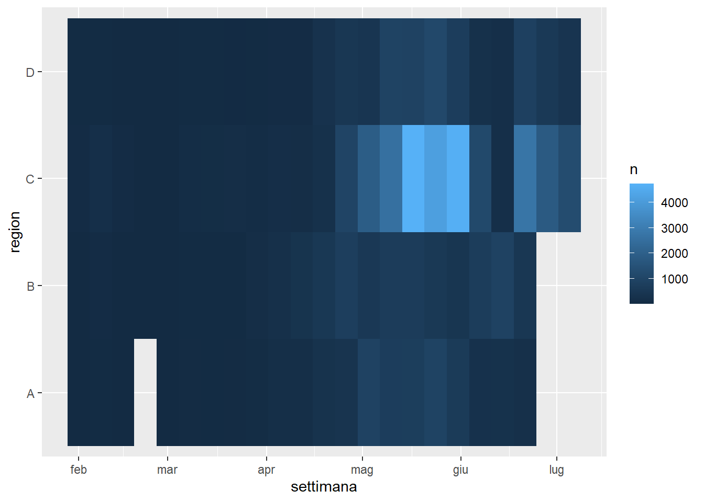
Aggiungi complete() alla catena che crea vacc_regione_settimana, assegnando n = 0 alle combinazioni mancanti, e riesegui la catena. Poi, sempre nell’area di prova, rifai la heatmap con scale_fill_gradient(), con "white" per i valori bassi e "darkred" per quelli alti; aggiungi le date in italiano e le etichette degli assi e della legenda.
Clicca per vedere la soluzione (provaci da solo prima!)
vacc_regione_settimana <- dati_clean %>%
mutate(settimana = floor_date(date_vacc, unit = "week", week_start = 1)) %>%
count(region, settimana) %>%
complete(region, settimana, fill = list(n = 0))
ggplot(data = vacc_regione_settimana, mapping = aes(x = settimana, y = region, fill = n)) +
geom_tile() +
scale_fill_gradient(low = "white", high = "darkred") +
scale_x_date(
date_breaks = "1 month",
labels = scales::label_date("%b\n%Y", locale = "it")) +
labs(x = "Settimana di vaccinazione", y = "Regione", fill = "Vaccinati")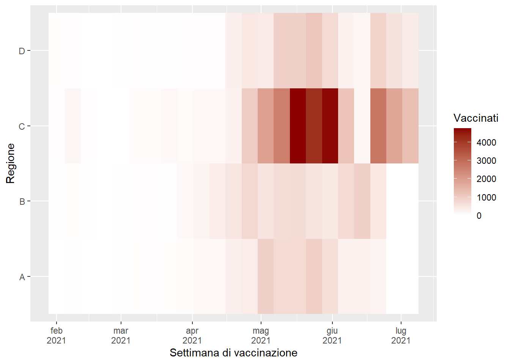
Ora vogliamo vedere, settimana per settimana, come si distribuiscono i vaccinati tra le classi d’età, separatamente per stato HIV.
Nell’area di prova, crea un dataframe eta_settimana con, per ogni combinazione di hiv, settimana e age_cat, il numero di vaccinati e la loro quota sul totale di quella settimana (nello stesso gruppo hiv), escludendo le persone con age_cat mancante. Poi fai una heatmap con la settimana sull’asse x, la classe d’età sull’asse y, il riempimento per la quota e un pannello per hiv, uno sotto l’altro.
Per i colori usa scale_fill_distiller(): è la versione per variabili continue di scale_fill_brewer() del Modulo 6, e usa le stesse palette. Con direction = 1 i colori più scuri vanno ai valori più alti.
Clicca per leggere un suggerimento
Dopo count(hiv, settimana, age_cat), raggruppa per hiv e settimana e calcola la quota con mutate(); ricordati di ungroup(). Per i pannelli uno sotto l’altro: facet_wrap(~ hiv, ncol = 1). Le etichette della legenda in percentuale si ottengono con labels = scales::label_percent() dentro scale_fill_distiller().
Clicca per vedere la soluzione (provaci da solo prima!)
eta_settimana <- dati_clean %>%
filter(!is.na(age_cat)) %>%
mutate(settimana = floor_date(date_vacc, unit = "week", week_start = 1)) %>%
count(hiv, settimana, age_cat) %>%
group_by(hiv, settimana) %>%
mutate(quota = n / sum(n)) %>%
ungroup()
ggplot(data = eta_settimana, mapping = aes(x = settimana, y = age_cat, fill = quota)) +
geom_tile() +
facet_wrap(~ hiv, ncol = 1) +
scale_fill_distiller(palette = "YlOrRd", direction = 1,
labels = scales::label_percent()) +
scale_x_date(
date_breaks = "1 month",
labels = scales::label_date("%b\n%Y", locale = "it")) +
labs(x = "Settimana di vaccinazione", y = "Classe d'età",
fill = "Quota della\nsettimana")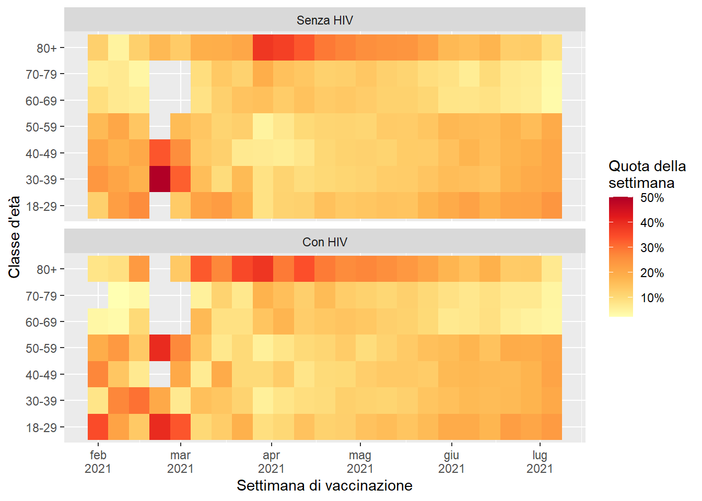
Crea una nuova sezione con Ctrl+Shift+R che si chiamerà “Heatmap”, sopra l’area di prova.
Quando le celle sono poche, conviene scrivere il valore su ciascuna. geom_text() aggiunge un testo in ogni posizione x, y, preso dall’estetica label. Per scrivere una proporzione come percentuale, scales::percent() trasforma direttamente i numeri in testo (label_percent() si usa invece dentro le scale); con accuracy = 1 arrotonda all’unità.
Nella sezione “Heatmap” dello script crea un dataframe charlson_eta con, per classe d’età e hiv, il numero di persone (n) e la quota con Charlson index 3 o più (quota_ch3), escludendo le persone con age_cat mancante. Nell’area di prova fai una heatmap con hiv sull’asse x, la classe d’età sull’asse y e il riempimento per quota_ch3, e aggiungi su ogni cella la percentuale con geom_text().
Clicca per leggere un suggerimento
La quota si calcola dentro summarise() come nel Modulo 4, con la media di una condizione: mean(chrls_index %in% c("3-4", "5+")). In geom_text() usa aes(label = scales::percent(quota_ch3, accuracy = 1)).
Clicca per vedere la soluzione (provaci da solo prima!)
# NELLO SCRIPT
# Heatmap ----------------------------------------------------------
charlson_eta <- dati_clean %>%
filter(!is.na(age_cat)) %>%
group_by(age_cat, hiv) %>%
summarise(
n = n(),
quota_ch3 = mean(chrls_index %in% c("3-4", "5+")),
.groups = "drop")
# IN AREA DI PROVA
ggplot(data = charlson_eta, mapping = aes(x = hiv, y = age_cat, fill = quota_ch3)) +
geom_tile() +
geom_text(mapping = aes(label = scales::percent(quota_ch3, accuracy = 1))) +
scale_fill_distiller(palette = "YlOrRd", direction = 1,
labels = scales::label_percent()) +
labs(x = NULL, y = "Classe d'età", fill = "Charlson 3+")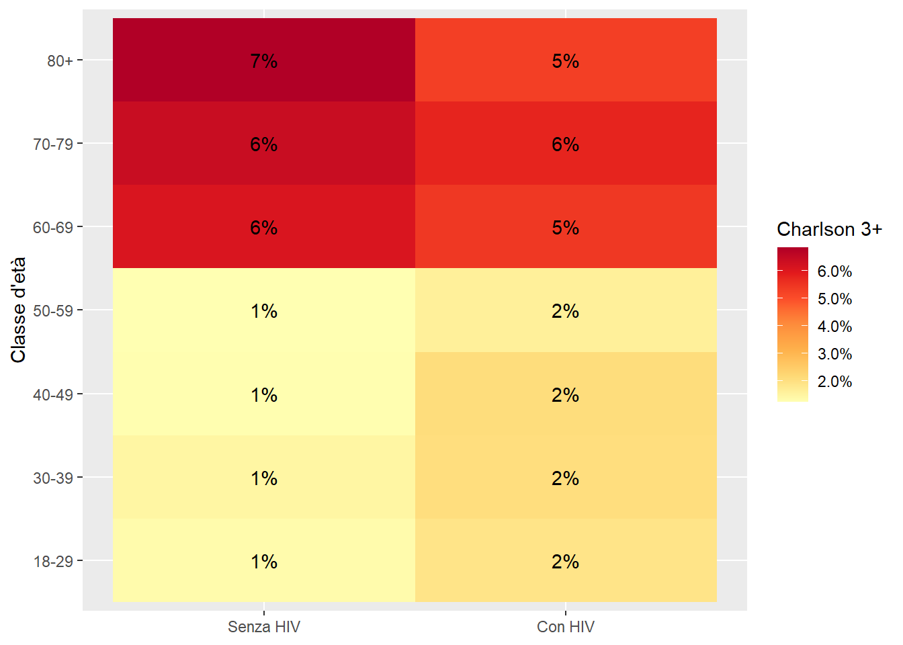
Ora, nella sezione “Heatmap”, sopra l’area di prova, mostra sulle celle anche il numero di persone, ad esempio “6%(n = 3121)”. Usa paste0(), come nel Modulo 6.
Clicca per vedere la soluzione (provaci da solo prima!)
ggplot(data = charlson_eta, mapping = aes(x = hiv, y = age_cat, fill = quota_ch3)) +
geom_tile() +
geom_text(mapping = aes(label = paste0(scales::percent(quota_ch3, accuracy = 1),
"\n(n = ", n, ")"))) +
scale_fill_distiller(palette = "YlOrRd", direction = 1,
labels = scales::label_percent()) +
labs(x = NULL, y = "Classe d'età", fill = "Charlson 3+")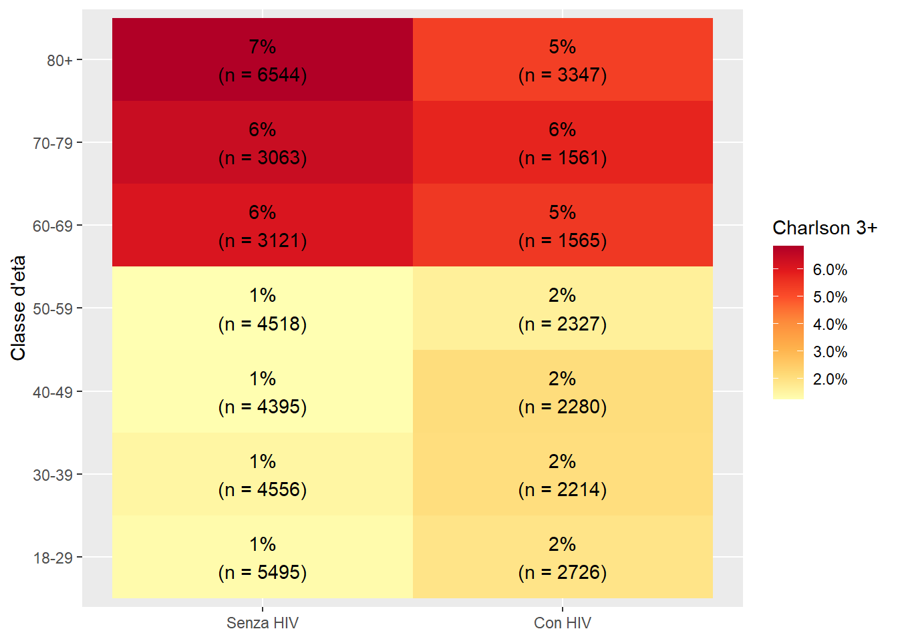
{sf}Crea una nuova sezione con Ctrl+Shift+R che si chiamerà “Mappe”, sopra l’area di prova.
All’inizio del modulo hai importato lo shapefile con read_sf(): il risultato, regioni_sf, è un oggetto sf, cioè un dataframe come quelli che conosci, con una riga per area e una variabile speciale, geometry, che contiene i confini. Per disegnarlo si usa geom_sf(), che non ha bisogno di x e y: le coordinate sono in geometry.
Lo shapefile contiene solo i confini e il codice di ciascuna regione. Per calcolare i tassi ti serve anche la popolazione, che si trova nel dataframe regioni, importata anch’essa all’inizio.
Nell’area di prova stampa i due oggetti in console e poi disegna regioni_sf con geom_sf() e theme_void().
Clicca per vedere la soluzione (provaci da solo prima!)
# IN AREA DI PROVA
regioni_sf| region | geometry |
|---|---|
| A | POLYGON ((534220.4 4928590,… |
| B | POLYGON ((411465.9 4834714,… |
| C | POLYGON ((508086.9 4409456,… |
| D | POLYGON ((690442.4 4282264,… |
regioni| codice_regione | area | popolazione |
|---|---|---|
| A | Nord | 4900000 |
| B | Nord | 6100000 |
| C | Centro | 10200000 |
| D | Sud | 5600000 |
| E | Sud | 3900000 |
| F | Isole | 1600000 |
ggplot(data = regioni_sf) +
geom_sf() +
theme_void()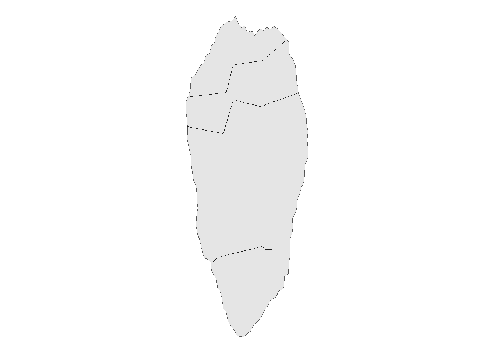
{sf}Per la mappa dei tassi servono due join, uno per ciascuna informazione che manca ai conteggi:
regioni, e permette di calcolare il tasso;regioni_sf, e permette di disegnare la mappa.Sopra all’area di prova, nella sezione “Mappe”, crea un dataframe vacc_regione con il numero di vaccinati per regione (variabile n_vaccinati). Uniscigli regioni con left_join() e calcola il tasso di vaccinati ogni 100.000 abitanti, salvando il risultato in tassi_regione. Nell’area di prova stampa tassi_regione.
Clicca per leggere un suggerimento
Le due chiavi hanno nomi diversi: by = join_by(region == codice_regione). Il tasso è n_vaccinati / popolazione * 100000.
Clicca per vedere la soluzione (provaci da solo prima!)
# NELLO SCRIPT
vacc_regione <- dati_clean %>%
count(region, name = "n_vaccinati")
# primo join: la popolazione
tassi_regione <- vacc_regione %>%
left_join(regioni, by = join_by(region == codice_regione)) %>%
mutate(tasso = n_vaccinati / popolazione * 100000)
# IN AREA DI PROVA
tassi_regione| region | n_vaccinati | area | popolazione | tasso |
|---|---|---|---|---|
| A | 5880 | Nord | 4900000 | 120.0000 |
| B | 7102 | Nord | 6100000 | 116.4262 |
| C | 27386 | Centro | 10200000 | 268.4902 |
| D | 7349 | Sud | 5600000 | 131.2321 |
Ora, nello script, fai il secondo join: unisci tassi_regione a regioni_sf, salvando il risultato in mappa_vacc. Nell’area di prova fai una mappa con il riempimento per il tasso.
Clicca per leggere un suggerimento
Parti da regioni_sf e unisci i tassi: qui la chiave ha lo stesso nome nei due dataframe, quindi basta by = "region".
Clicca per vedere la soluzione (provaci da solo prima!)
# NELLO SCRIPT
# secondo join: la geometria
mappa_vacc <- regioni_sf %>%
left_join(tassi_regione, by = "region")
# IN AREA DI PROVA
ggplot(data = mappa_vacc) +
geom_sf(mapping = aes(fill = tasso)) +
theme_void()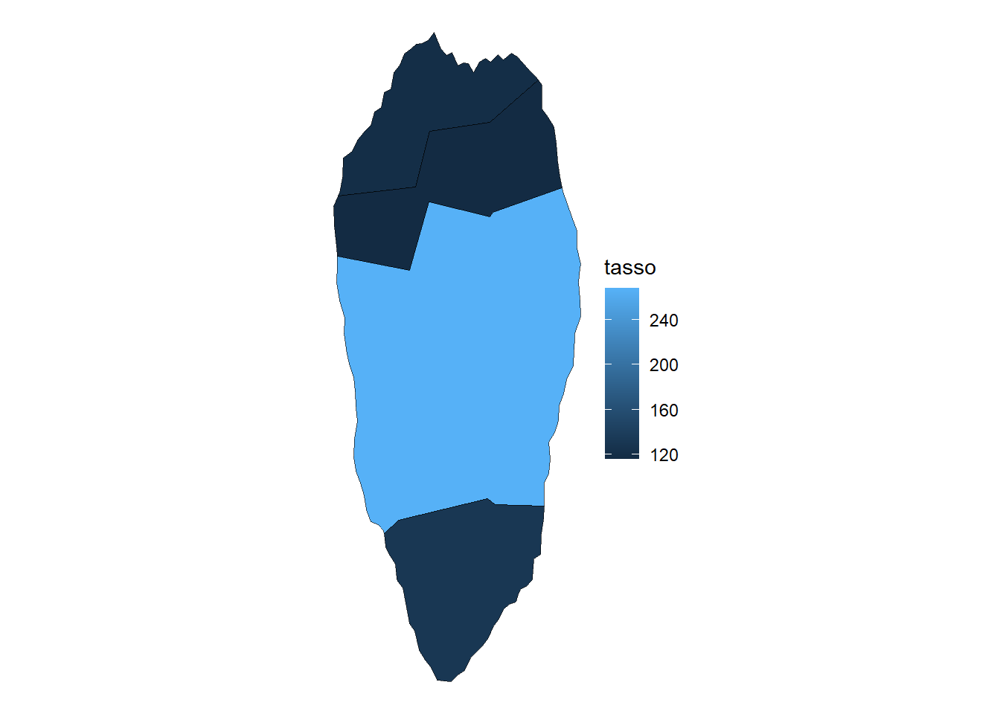
Ora, nella sezione “Mappe” dello script, rifinisci la mappa: usa scale_fill_distiller() con la palette "YlOrRd" e direction = 1, aggiungi il nome della regione con geom_sf_text(), che funziona come geom_text() ma prende la posizione da geometry, un titolo e il titolo della legenda.
Clicca per vedere la soluzione (provaci da solo prima!)
ggplot(data = mappa_vacc) +
geom_sf(mapping = aes(fill = tasso)) +
geom_sf_text(mapping = aes(label = region)) +
scale_fill_distiller(palette = "YlOrRd", direction = 1) +
theme_void() +
labs(title = "Vaccinati della coorte per regione",
fill = "Vaccinati per\n100.000 abitanti")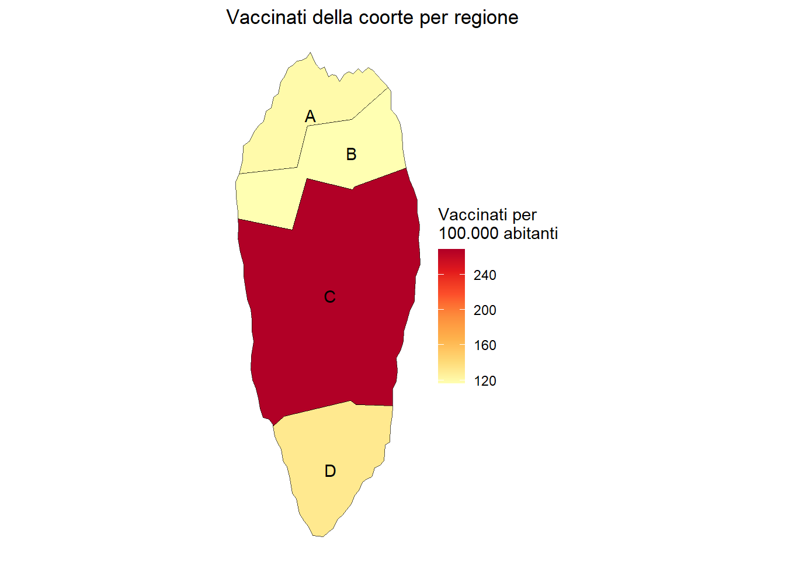
Nell’area di prova, calcola il tasso di vaccinati ogni 100.000 abitanti per regione e hiv, con gli stessi due join: prima la popolazione, poi la geometria. Poi, sempre nell’area di prova, fai una mappa con un pannello per hiv.
Clicca per leggere un suggerimento
Conta per region e hiv. Unisci regioni e calcola il tasso, poi unisci il risultato a regioni_sf e usa facet_wrap(~ hiv). Ogni regione compare due volte nel risultato del join con regioni_sf, una per ciascun valore di hiv: è proprio quello che serve per i due pannelli.
Clicca per vedere la soluzione (provaci da solo prima!)
vacc_regione_hiv <- dati_clean %>%
count(region, hiv, name = "n_vaccinati")
# primo join: la popolazione
tassi_regione_hiv <- vacc_regione_hiv %>%
left_join(regioni, by = join_by(region == codice_regione)) %>%
mutate(tasso = n_vaccinati / popolazione * 100000)
# secondo join: la geometria
mappa_hiv <- regioni_sf %>%
left_join(tassi_regione_hiv, by = "region")
ggplot(data = mappa_hiv) +
geom_sf(mapping = aes(fill = tasso)) +
geom_sf_text(mapping = aes(label = region)) +
facet_wrap(~ hiv) +
scale_fill_distiller(palette = "YlOrRd", direction = 1) +
theme_void() +
labs(fill = "Vaccinati per\n100.000 abitanti")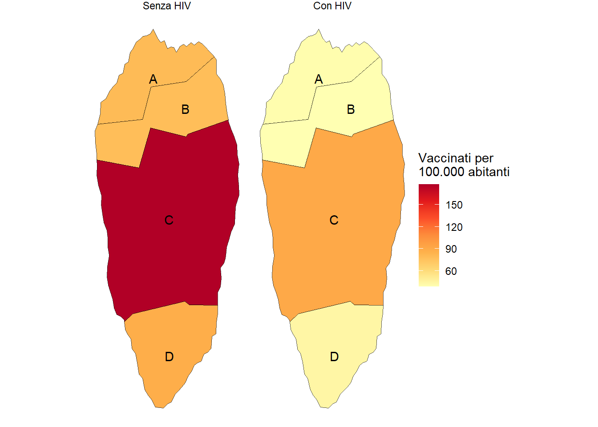
Nella sezione “Mappe” sopra l’area di prova, fai una mappa della proporzione di persone con HIV tra i vaccinati di ogni regione, con le percentuali scritte sulla mappa.
Clicca per leggere un suggerimento
Prima crea un dataframe proporzione_hiv che, partendo da dati_clean, contiene la proporzione di persone con HIV per ciascuna regione, utilizzando group_by() e summarise(). Unisci poi questo dataframe a regioni_sf, salvando il risultato in mappa_prop_hiv, e infine crea il grafico.
Clicca per vedere la soluzione (provaci da solo prima!)
proporzione_hiv <- dati_clean %>%
group_by(region) %>%
summarise(proporzione_hiv = mean(hiv == "Con HIV"), .groups = "drop")
mappa_prop_hiv <- regioni_sf %>%
left_join(proporzione_hiv, by = "region")
ggplot(data = mappa_prop_hiv) +
geom_sf(mapping = aes(fill = proporzione_hiv)) +
geom_sf_text(mapping = aes(label = scales::percent(proporzione_hiv, accuracy = 1))) +
scale_fill_distiller(palette = "YlOrRd", direction = 1,
labels = scales::label_percent()) +
theme_void() +
labs(fill = "Proporzione\ncon HIV")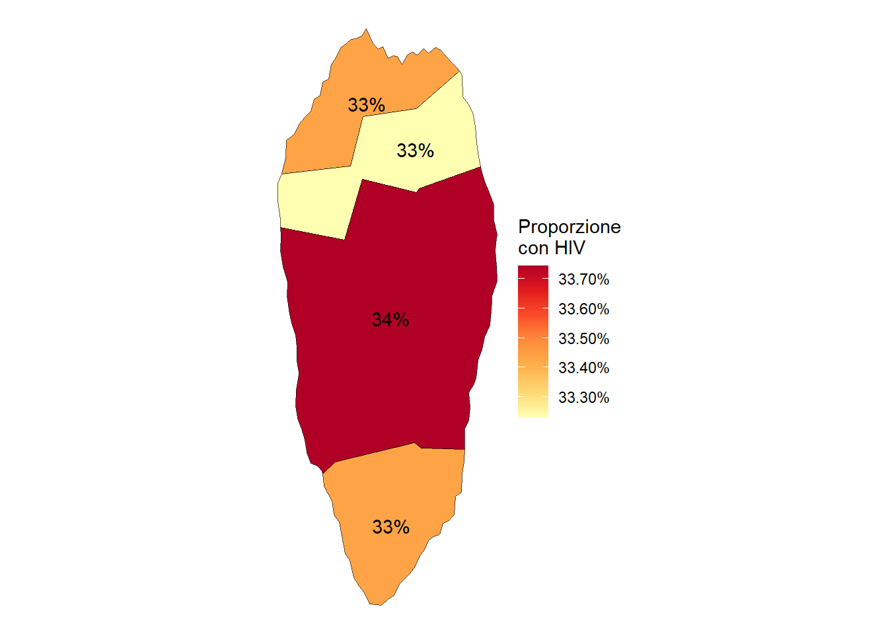
{apyramid}age_pyramid() del pacchetto {apyramid} costruisce una piramide da dati individuali: una barra per classe d’età, a sinistra e a destra secondo una seconda variabile, di solito il sesso. Il risultato è un grafico {ggplot2}.
Apri l’help con ?age_pyramid e leggi gli argomenti. Poi, nell’area di prova, fai una piramide della coorte per classe d’età e sesso, prima con i conteggi e poi con le proporzioni.
Clicca per leggere un suggerimento
Gli argomenti age_group = e split_by = vogliono il nome della variabile tra virgolette. Per le proporzioni: proportional = TRUE.
Clicca per vedere la soluzione (provaci da solo prima!)
age_pyramid(data = dati_clean, age_group = "age_cat", split_by = "sex")
age_pyramid(data = dati_clean, age_group = "age_cat", split_by = "sex",
proportional = TRUE)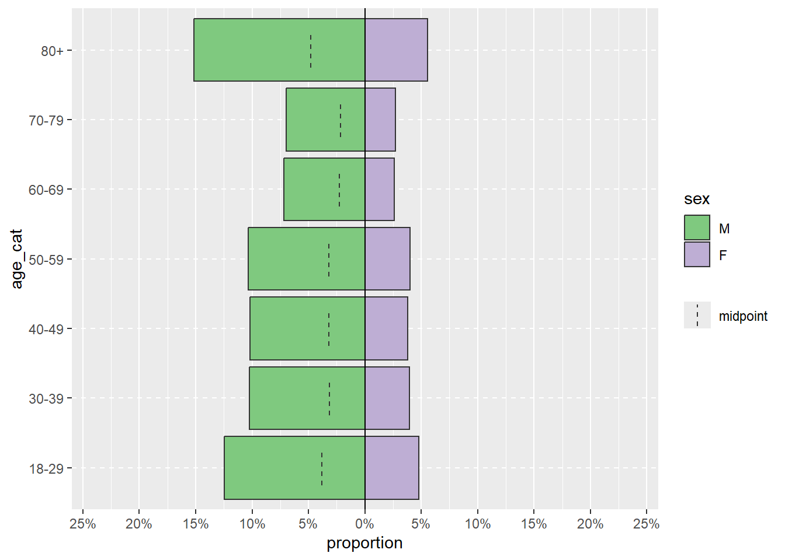
Nell’area di prova fai due piramidi con le proporzioni, una per le persone con HIV e una per i controlli, filtrando la coorte.
Clicca per vedere la soluzione (provaci da solo prima!)
age_pyramid(data = filter(dati_clean, hiv == "Con HIV"),
age_group = "age_cat", split_by = "sex",
proportional = TRUE)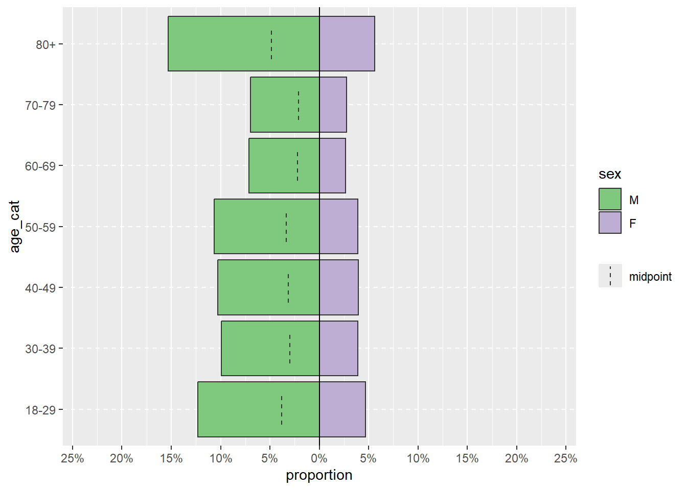
age_pyramid(data = filter(dati_clean, hiv == "Senza HIV"),
age_group = "age_cat", split_by = "sex",
proportional = TRUE)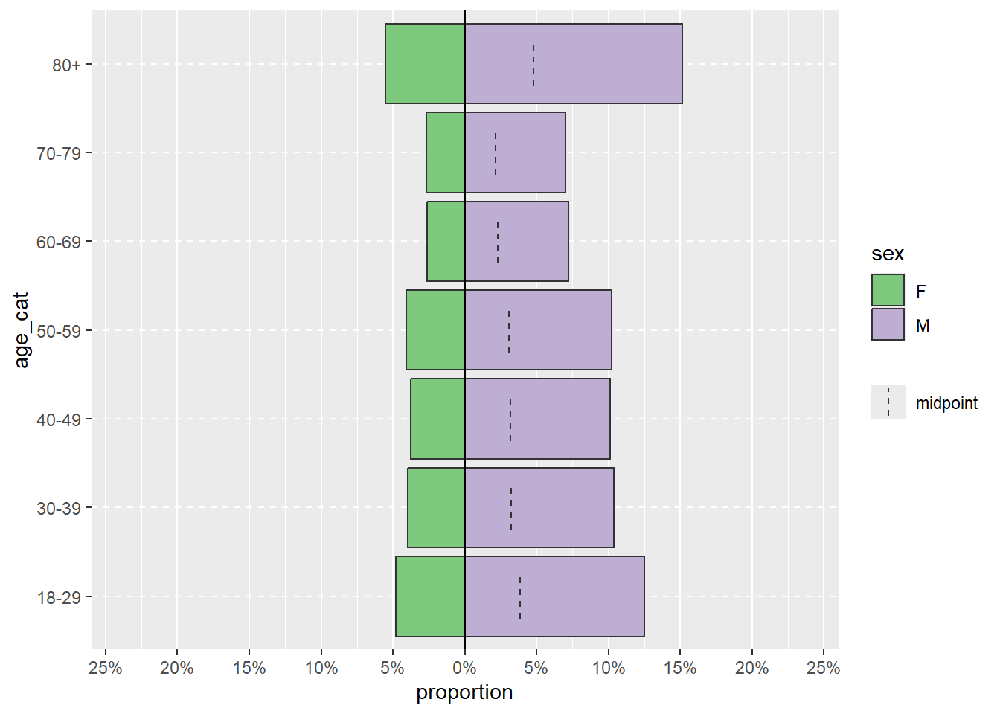
Guarda la legenda delle due piramidi: in una i maschi sono a sinistra, nell’altra a destra. age_pyramid() mette a sinistra il primo livello di split_by, e sex è una variabile di testo, i cui “livelli” dipendono dai dati. Crea una nuova sezione chiamata “Piramidi” sopra l’area di prova (Ctrl+Shift+R): qui trasforma sex in un factor con livelli "M" e "F", come hai fatto per hiv nel Modulo 3, e rifai le due piramidi.
Clicca per vedere la soluzione (provaci da solo prima!)
# NELLO SCRIPT
# Piramidi ----------------------------------------------------------
dati_clean <- dati_clean %>%
mutate(sex = factor(sex, levels = c("M", "F")))
age_pyramid(data = filter(dati_clean, hiv == "Con HIV"),
age_group = "age_cat", split_by = "sex",
proportional = TRUE)
age_pyramid(data = filter(dati_clean, hiv == "Senza HIV"),
age_group = "age_cat", split_by = "sex",
proportional = TRUE)Nella sezione “Piramidi” crea un dataframe piramide_agg con il numero di persone per classe d’età e sesso, escludendo le poche persone con età o sesso mancanti (7 in tutto). Nell’area di prova, fai la piramide da questi conteggi, usando l’argomento count = di age_pyramid().
Clicca per vedere la soluzione (provaci da solo prima!)
# NELLO SCRIPT
piramide_agg <- dati_clean %>%
filter(!is.na(age_cat), !is.na(sex)) %>%
count(age_cat, sex)
# IN AREA DI PROVA
age_pyramid(data = piramide_agg, age_group = "age_cat", split_by = "sex",
count = "n")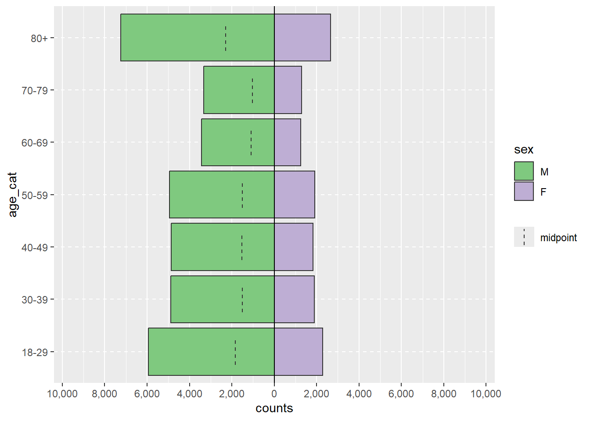
{ggplot2}Il risultato di age_pyramid() è un grafico {ggplot2}, quindi puoi aggiungere livelli con +. Nella sezione “Piramidi”, sopra l’area di prova, aggiungi alla piramide con le proporzioni theme_minimal(), i colori "#2a9d8f" per le femmine e "#e76f51" per i maschi con scale_fill_manual(), e le etichette degli assi e della legenda.
Clicca per leggere un suggerimento
La piramide è un grafico a barre ruotato con coord_flip(), che hai visto nel Modulo 6: in labs(), x è l’asse delle classi d’età (verticale) e y quello delle proporzioni (orizzontale). R ti avviserà che la scala del riempimento è già presente e viene sostituita: è normale, perché age_pyramid() ne crea una sua.
Clicca per vedere la soluzione (provaci da solo prima!)
age_pyramid(data = dati_clean, age_group = "age_cat", split_by = "sex",
proportional = TRUE) +
theme_minimal() +
scale_fill_manual(values = c("F" = "#2a9d8f", "M" = "#e76f51")) +
labs(x = "Classe d'età", y = "Proporzione", fill = "Sesso")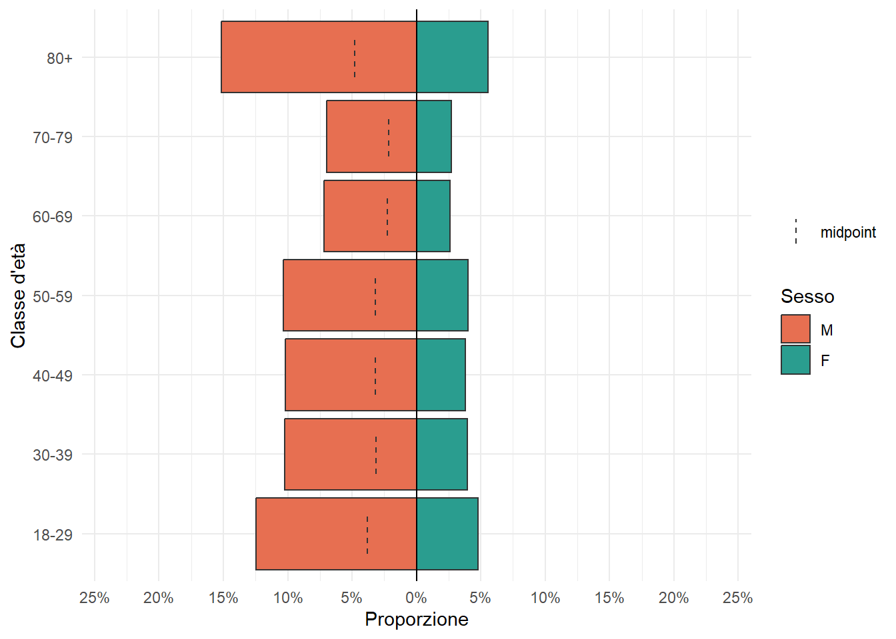
Ecco come dovrebbe essere il tuo script per questa esercitazione, con le soluzioni di tutti gli esercizi divise per sezione. Confrontalo con il tuo: i commenti e alcuni dettagli possono essere diversi, ma i comandi devono fare le stesse cose. Lo script completo dei Moduli 5, 6 e 8 lo trovi anche nella cartella script/backup, nel file backup_plot.R.
Clicca per vedere lo script completo
# All'inizio di plot.R: sezioni già presenti, con le aggiunte del Modulo 08
# Caricamento pacchetti ---------------------------------------------------
pacman::p_load(
rio, # importazione ed esportazione dei dati
skimr, # panoramica dei dati
janitor, # pulizia dei dati e tabelle
lubridate, # lavorare con le date
epikit, # classi di età
gtsummary, # tabelle descrittive
flextable, # tabelle da presentare
sf, # dati spaziali e mappe (Modulo 08)
apyramid, # piramidi per età e sesso (Modulo 08)
tidyverse # gestione e visualizzazione dei dati
)
# Importazione dati -------------------------------------------------------
dati_clean <- import("dati/dati_clean.rds")
regioni_sf <- read_sf("dati/shapefiles/regioni.shp")
regioni <- import("dati/regioni.rds")
# ... sezioni dei Moduli 5 e 6 ...
# Modulo 08 - Altri grafici ================================================
# Epicurva ----------------------------------------------------------------
# tutti i lunedì, dalla settimana della prima vaccinazione a quella dopo l'ultima
settimane <- seq.Date(
from = floor_date(min(dati_clean$date_vacc), unit = "week", week_start = 1),
to = ceiling_date(max(dati_clean$date_vacc), unit = "week", week_start = 1),
by = "week")
# curva settimanale: settimane da lunedì a domenica
ggplot(data = dati_clean, mapping = aes(x = date_vacc)) +
geom_histogram(breaks = settimane, closed = "left") +
scale_x_date(
date_breaks = "1 month",
labels = scales::label_date("%b\n%Y", locale = "it")) +
labs(x = "Settimana di vaccinazione", y = "Vaccinati")
# vaccinati per settimana, comprese le settimane senza vaccinati
vacc_settimana <- dati_clean %>%
mutate(settimana = floor_date(date_vacc, unit = "week", week_start = 1)) %>%
count(settimana) %>%
complete(settimana = seq.Date(from = min(settimana), to = max(settimana), by = "week"),
fill = list(n = 0))
# curva settimanale con i numeri di settimana ISO
ggplot(data = vacc_settimana, mapping = aes(x = settimana, y = n)) +
geom_col(width = 5) +
scale_x_date(
breaks = seq.Date(from = min(settimane), to = max(settimane), by = "4 weeks"),
labels = scales::label_date("%G-W%V")) +
theme(axis.text.x = element_text(angle = 90, vjust = 0.5)) +
labs(x = "Settimana di vaccinazione", y = "Vaccinati")
# Heatmap -----------------------------------------------------------------
# quota con Charlson 3+ per classe d'età e stato HIV
charlson_eta <- dati_clean %>%
filter(!is.na(age_cat)) %>%
group_by(age_cat, hiv) %>%
summarise(
n = n(),
quota_ch3 = mean(chrls_index %in% c("3-4", "5+")),
.groups = "drop")
ggplot(data = charlson_eta, mapping = aes(x = hiv, y = age_cat, fill = quota_ch3)) +
geom_tile() +
geom_text(mapping = aes(label = paste0(scales::percent(quota_ch3, accuracy = 1),
"\n(n = ", n, ")"))) +
scale_fill_distiller(palette = "YlOrRd", direction = 1,
labels = scales::label_percent()) +
labs(x = NULL, y = "Classe d'età", fill = "Charlson 3+")
# Mappe -------------------------------------------------------------------
# tasso di vaccinati per regione
vacc_regione <- dati_clean %>%
count(region, name = "n_vaccinati")
# primo join: la popolazione
tassi_regione <- vacc_regione %>%
left_join(regioni, by = join_by(region == codice_regione)) %>%
mutate(tasso = n_vaccinati / popolazione * 100000)
# secondo join: la geometria
mappa_vacc <- regioni_sf %>%
left_join(tassi_regione, by = "region")
ggplot(data = mappa_vacc) +
geom_sf(mapping = aes(fill = tasso)) +
geom_sf_text(mapping = aes(label = region)) +
scale_fill_distiller(palette = "YlOrRd", direction = 1) +
theme_void() +
labs(title = "Vaccinati della coorte per regione",
fill = "Vaccinati per\n100.000 abitanti")
# proporzione di persone con HIV per regione
proporzione_hiv <- dati_clean %>%
group_by(region) %>%
summarise(proporzione_hiv = mean(hiv == "Con HIV"), .groups = "drop")
mappa_prop_hiv <- regioni_sf %>%
left_join(proporzione_hiv, by = "region")
ggplot(data = mappa_prop_hiv) +
geom_sf(mapping = aes(fill = proporzione_hiv)) +
geom_sf_text(mapping = aes(label = scales::percent(proporzione_hiv, accuracy = 1))) +
scale_fill_distiller(palette = "YlOrRd", direction = 1,
labels = scales::label_percent()) +
theme_void() +
labs(fill = "Proporzione\ncon HIV")
# Piramidi ----------------------------------------------------------------
# sesso come factor: i maschi sempre a sinistra
dati_clean <- dati_clean %>%
mutate(sex = factor(sex, levels = c("M", "F")))
age_pyramid(data = filter(dati_clean, hiv == "Con HIV"),
age_group = "age_cat", split_by = "sex",
proportional = TRUE)
age_pyramid(data = filter(dati_clean, hiv == "Senza HIV"),
age_group = "age_cat", split_by = "sex",
proportional = TRUE)
# conteggi per classe d'età e sesso, per la piramide da dati aggregati
piramide_agg <- dati_clean %>%
filter(!is.na(age_cat), !is.na(sex)) %>%
count(age_cat, sex)
# piramide personalizzata con ggplot2
age_pyramid(data = dati_clean, age_group = "age_cat", split_by = "sex",
proportional = TRUE) +
theme_minimal() +
scale_fill_manual(values = c("F" = "#2a9d8f", "M" = "#e76f51")) +
labs(x = "Classe d'età", y = "Proporzione", fill = "Sesso")In questo modulo hai imparato a:
binwidth = a breaks =, per avere settimane da lunedì a domenica;floor_date() e ceiling_date() (unit =, week_start = 1) e creare sequenze di date con seq.Date();breaks = di geom_histogram() con closed = "left";scales::label_date("%G-W%V"), e indicare con width = la larghezza delle barre di geom_col() su un asse di date, in giorni;complete() e fill = list(n = 0), prima del grafico;geom_tile(), colorarle con scale_fill_gradient() o scale_fill_distiller() e scrivere i valori sulle celle con geom_text();read_sf() in un oggetto sf, un dataframe con la variabile geometry, e disegnarlo con geom_sf(), geom_sf_text() e theme_void();join_by()), poi la geometria, partendo dall’oggetto sf; e usare i tassi per confrontare aree di popolazione diversa;age_pyramid() da dati individuali o aggregati (count =), controllando l’ordine con un factor, e personalizzarle con {ggplot2}.{lubridate}: https://lubridate.tidyverse.org/reference/round_date.html{tidyr}: https://tidyr.tidyverse.org/reference/complete.htmlgeom_tile(): https://ggplot2.tidyverse.org/reference/geom_tile.htmlgeom_sf(): https://ggplot2.tidyverse.org/reference/ggsf.html{sf}: https://r-spatial.github.io/sf/{apyramid}: https://cran.r-project.org/package=apyramid